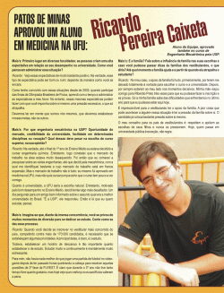

Mais’s: Primeiro lugar em diversas faculdades: as pessoas criam uma alta expectativa em relação ao seu desempenho na universidade. Como você pensa em administrar essa situação?
Ricardo: Vejo essas expectativas de modo bastante positivo. Na verdade, esse tipo de expectativa pode ser bom ou ruim; depende da maneira como você as encara.
Como tenho convivido com essas situações desde de 2003, quando participei das finais da Olimpíada Brasileira de Física, aprendi com o tempo a administrar as expectativas a meu favor. No entanto, essas mesmas expectativas podem fazer com que você imponha sobre si mesmo uma pressão excessiva, o que só atrapalha.
Devemos ter em mente que somos nós mesmos, que devemos estabelecer nossas metas, não os outros.
Mais’s: Por que engenharia mecatrônica na USP? Oportunidade do mercado, credibilidade da universidade, facilidade em determinadas disciplinas ou vocação? Qual dessas deve pesar na escolha do curso superior, na sua opinião?
Ricardo: Na verdade, até o final do 1º ano do Ensino Médio eu estava decidido a cursar engenharia química. Entretanto, logo constatei que o mercado de trabalho na área estava muito desaquecido. Foi então que eu comecei a pesquisar sobre as várias engenharias, até que decidi pela mecatrônica, com a qual me identifiquei bastante e cujo mercado de trabalho está em franca expansão. Mas o mercado de trabalho não é tudo: eu mesmo fui aprovado em medicina na UFU, mas não quis cursar porque acho que o curso tem pouco a ver comigo.
Quanto à universidade, a UFU seria a escolha natural. Entretanto, motivado pelo bom desempenho no Ensino Médio, decidi tentar algo mais desafiador. Um dia perguntei para um amigo bem informado sobre o assunto qual era a melhor universidade do Brasil. "É a USP", ele respondeu. Então é lá que eu quero estudar, pensei.
Mais’s: Imagina-se que, diante da imensa concorrência, você se privou de muitos momentos de diversão para se dedicar ao estudo. Conte como se deu esse processo.
Ricardo: Quando você decide se inscrever no vestibular mais concorrido do país, competindo contra mais de 170.000 candidatos, é necessário que se estabeleçam algumas prioridades. A principal delas, é claro, é o estudo.
Todavia, estabelecer um horário de descanso é tão importante quanto estabelecer o de estudo. Estudar muito e continuamente é mentalmente muito estressante.
Para mim, não havia nada melhor do que jogar uma partida de futebol no video-game depois de ter passado horas quebrando a cabeça para resolver aquelas questões de 2ª fase da FUVEST. É claro que durante o 3º ano não tive tanto tempo livre quanto gostaria, mas hoje vejo que o esforço e os sacrifícios valeram a pena.
Mais’s: E a família? Fale sobre a influência da família nas suas escolhas e caso você pudesse passar dicas às famílias dos vestibulandos, o que diria? Até qual momento a família ajuda e a partir de quando ela atrapalha o estudante?
Ricardo: No meu caso, o apoio da família foi tudo. primeiramente, por terem me deixado totalmente à vontade para escolher o curso e a universidade. Depois, por sempre estarem ao meu lado nos momentos decisivos. Minha mãe viajou comigo para Ribeirão Preto três vezes para que eu pudesse fazer a inscrição e as provas. Só a minha família sabe das dificuldades que enfrentamos no último ano para que eu pudesse estar aqui hoje.
É imprescindível para o vestibulando ter o apoio da família. A pior coisa que pode acontecer a alguém nessa situação é ter a pressão da família sobre si. O candidato já coloca bastante pressão sobre si mesmo.
O meu conselho para os pais de vestibulandos é: respeitem e apóiem as escolhas de seus filhos e nunca os pressionem. Hoje, quem passa em universidade pública é exceção, não regra.
Mais’s: Sobre a instituição de ensino na qual você se preparou: quais os ensinamentos que vão ficar ao longo de sua trajetória?
Ricardo: Estar extremamente bem preparado é imprescindível na hora de se prestar um vestibular como a FUVEST. São poucas as escolas que preparam seus alunos para um desafio desse porte. Nesse ponto, considero-me privilegiado por ter estudado no Colégio Equipe.
Hoje, quando converso com meus colegas, percebo o quanto foi boa a preparação que recebi, e que ela só se compara à fornecida nos melhores colégios de São Paulo. No meu caso, o que fez a diferença na hora do vestibular foi o que eu aprendi no Equipe. Além disso, lá reencontrei velhos amigos e fiz novos, que espero estejam comigo por toda a vida.
 Mais’s: Em linhas gerais, quais seus planos para o futuro: profissional, acadêmico e pessoal?
Mais’s: Em linhas gerais, quais seus planos para o futuro: profissional, acadêmico e pessoal?
Ricardo: Vencidas as metas antigas, é hora de estabelecer novas. A minha nova meta é conseguir me graduar em engenharia com o mesmo sucesso do Ensino Médio. Para que isto aconteça, tenho me cedicado com afinco.
Após a formatura, pretendo conseguir um bom emprego, no qual eu possa aplicar os conhecimentos acumulados durante os anos de universidade e contribuir com o desenvolvimento do país. Mas até lá ainda são cinco anos de curso, e nesse meio tempo pretendo realizar muitos projetos.
Tenho um grande desejo de, após formado, retormar à Patos de Minas. Patos é a cidade que eu amo e para mim o melhor lugar do mundo. Voltar para casa seria ótimo.
Quando a URT jogou contra o Santos intimei todos os meus colegas a verem o jogo. Embora torça para o Mamoré, vibrei bastante quando o Ditinho empatou o jogo. Meus colegas querem ir trabalhar nos Estados Unidos e Europa. Eu quero me formar e voltar para Patos.
Mais’s: E você como cidadão brasileiro: como vê a atual realidade política do país? Se pudesse presidir o Brasil, quais seriam suas prioridades?
Ricardo: Vejo com profundo desapontmento. A próxima eleição é apenas a minha segunda, e já sinto que não há candidatos nos quais compensa votar, principalmente em São Paulo. Infelizmente, essa também é a opinião da maioria do pessoal aqui da engenharia. Com a realidade política que temos no Brasil hoje, a apatia dos jovens é natural.
Caso eu fosse o Presidente do Brasil, não me ocuparia tomando medidas populistas, como faz o governo atual. Investiria, ao invés disso, na modernização da economia, principalmente na do setor produtivo, de forma a adequar o Brasil à nova ordem econômica mundial, tornando-o mais eficiente e competitivo.
É claro que as desigualdades sociais devem ser corrigidas, mas medidas paliativas, como as tomadas atualmente, não resolvem o problema. A meu ver, o fortalecimento estrutural da economia é um pré requisito para a promoção de justiça social.